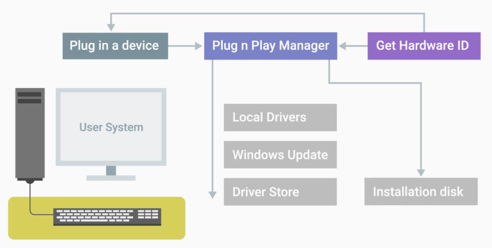

Google IT support — Operating Systems (Windows)
1. Navigating the system
To navigate files and directories in operating systems you can use GUI or command-line interface (through shell). These files and directories are organized in a hierarchical directory tree (main directory branches off and holds other directories and files).
1.1. Basics
- file systems are assigned to drive letters, e.g.,
C:,D:(A:andB:were used for floppy drives) - subdirectories are separated by
\(back slash) - in every file system there is a special folder for deleted files (
$RECYCLE.BIN) - there are two command-line interfaces available: Command Prompt (since MS DOS) and PowerShell (many PowerShell commands are aliases for common commands in other shells)
- strings in command line can be denoted by
'my folder'or bymy` folder(`is the escape character) - PowerShell commands often have a verb-noun format (commandlet)
- tab completion and wildcards are available in PowerShell
Most common commands:
xxxxxxxxxx<command> <options> <arguments>Get-Help <command> : manual (-Full more info)<command> /? : manual for Command Prompt commandsGet-Alias <command> : get PowerShell command from its aliasecho <str> : print inputclear : clear screen (or ctrl + L)history : show command history (or ctrl + R for search, or #<command> and tab completion)exit : close terminalpwd : print working directoryls <path> : list files and directories (-Force for hidden files)tree <path> : list files and directories in a tree-like formatcd <path> : change directorymkdir <path> : create directoryrm <path> : remove file/directory (-Recurse for directory, -Force)cp <path1> <path2> : copy file/directory (-Recurse for directory, -Verbose)mv <path1> <path2> : move (or rename) file/directory
Wildcards (symbols used to represent one or more characters):
xxxxxxxxxx~ : user directory (i.e., `C:\Users\<user>`).. : one level up. : current directory? : any symbol* : any number of any symbols
PowerShell shortcuts:
| shortcut | description |
|---|---|
| Ctrl + C / V | copy/paste |
| Ctrl + L | clear terminal screen |
| Ctrl + C | kill current process |
| Tab | tab completion |
1.2. File and text manipulation
xxxxxxxxxxcat <file> : view contents of a file (-Head/-Tail <N> for first/last N lines)more <file> : open file with more text editor
Windows has a service called the Windows Search Service, which indexes files on a computer and compiles a list of their names and properties. This is a resource intensive process, so by default it's enabled only for files in user home directory in Windows 10, and disabled on Windows Servers. For the same reason you can't search data within files by default (to enable: Indexing Options → Advanced → File Types → Index Properties and File Contents [X]).
Search via PowerShell:
- within directories:
ls <path> -Recurse -Filter <str> - within files (could use regexes):
sls <str> <files>
1.3. I/O streams and the pipeline
- there are three main I/O streams: stdin (files/keyboard), stdout (screen by default) and stderr (screen by default)
- the direction of these streams can be changed with redirector operators
- there is a special variable that contains the definition of nothing (
$null)

xxxxxxxxxx<com> < <file> : stdin from file<com> > <file> : stdout to file (rewrite)<com> >> <file> : stdout to file (append)<com> 2> <file> : stderr to file (rewrite)<com> 2>> <file> : stderr to file (append)<com1> | <com2> : pipeline (stdin[i+1] = stdout[i])
2. Users and permissions
2.1. Users and groups
- there are two different types of users: standard users (have restricted access) and administrators (have complete control of a machine, i.e., can grant access for other users, install software, change restricted system settings, etc.).
- good practice: not to be logged in as administrator all the time, but use your own account, and acquire admin privileges only when you need them (with the help of UAC, or user access control, which prevents unauthorized changes to a system)
- good password practice: administrator sets a default password for user, and then makes them change it on the next log in
- there is a special user guest that's allowed to use the computer without a password (disabled by default)
- users are put together in groups according to levels of access and permissions
- authenticated users group is a group of users with passwords (i.e., excludes guest users)
Users and groups can be managed in Local Users and Groups tab of Computer Management tool or through PowerShell:
Computer Management tool:
- Task Scheduler (schedule programs and tasks to run at certain times)
- Event Viewer (view system logs)
- Shared folders (manage folders that can be shared between users)
- Local Users and Groups (user and group management)
- Performance (monitor resources of a machine)
- Device Manager (i.e., network cards, sound cards, monitors, etc.)
- Disk Management (storage management)
- Services and Applications (manage programs and services available on the system)
PowerShell:
xxxxxxxxxxGet-LocalUser : show list of local usersGet-LocalGroup : show list of local groupsGet-LocalGroupMember <group> : show list of users in a groupnet user <user> * /add : add new user (/logonpasswordchg:yes force password change on next log in)net user <user> /delete : delete usernet user <user> * : change user password
2.2. Permissions
Files and folder permissions are assigned using ACLs (access control lists):
- there are DACLs (discretionary ACLs), which are used for permissions management, and SACLs (system ACLs), which are used to make access logs
- every file and folder will have an owner and one or more DACLs
- there are simple permissions and special permissions
| Permission | Description |
|---|---|
| Read |
|
| Read and execute |
|
| List folder contents |
|
| Write |
|
| Modify |
|
| Full Control |
|
DACLs can be viewed and modified via GUI or through PowerShell:
GUI:
- via
Properties → Security: top box for list of users and groups, bottom box for list of permissions - deny option doesn't allow to have certain permissions (takes precedence over allow option)
- via
PowerShell:
xxxxxxxxxxICACL (improved change ACL utility)icacls <path> : show permissions for a file/foldericacls <path> /grant <arg> : change file/folder permissionsicacls <path> /remove <arg> : remove file/folder permissions
3. Package and software management
3.1. Software packages
Developers package software using software compiling tools. In Windows, software is usually packaged as .exe files (executable files). They contain instructions for a computer to perform, computer code and other files that program might use.
executables are created according to Microsoft's PE format (portable executable)
executables:
- can contain an
.msifile (Microsoft install package), which is used to guide the Windows Installer in the installation, maintenance, and removal of a program - or alternatively, can be used as stand-alone custom installers (no
.msifile inside and no usage of the Windows Installer)
- can contain an
Windows Store (application repository for Windows apps) uses
.appxformat for packagesprograms can be installed using GUI or PowerShell
some executables can have option for special flags that allow silent installation, auto reboot after instalation, etc.
Packages usually rely on other pieces of code in order to work. In Windows these dependencies are dynamic-link libraries, or DLLs.
- same DLL can be used by lots of different programs
- a given installation package will have all the needed resources and dependencies (like DLLs)
- side-by-side assemblies (or SxS) are used for shared libraries and resources management to avoid conflicts between different versions of same DLLs (stored in
C:\Windows\WinSxS)
3.2. Package managers
In addition to SxS system Windows Package Manager can be used to install and maintain the libraries and other dependencies. A package manager makes sure that the process of software installation, removal, update, and dependency management is as easy and automatic as possible.
- PowerShell Gallery is a default package source
- popular third party alternatives: Chocolatey and Nuget
- in a busyness environment private repositories can be used
xxxxxxxxxxRegister-PackageSource -Name chocolatey -ProviderName Chocolatey -Location https://chocolatey.org/api/v2 : add Chocolatey as a package sourceGet-PackageSource : show a package source (to verify)Find-Package <name> -IncludeDependencies : locate package with its dependenciesInstall-Package -Name <name> : install packageGet-Package <name> : verify that package is installedUninstall-Package -Name <name> : uninstall package
Most Windows software is distributed in closed source packages (i.e., source code is hidden), but there are tools to check out installer actions (e.g., process monitoring from sysinterals toolkit or orca from Windows SDK).
3.3. Archives
Archive is one or more files compressed into a single file.
- popular archive types:
.tar,.zip, and.rar - archives can be used for software packaging (installing from source)
- popular open source tool for working with archives: 7-zip, it can be used via GUI or PowerShell (with
Compress-Archivecommand)
3.4. Mobile app packages
Mobile applications usually can be downloaded only from a trusted source (like an app store). App store is a central managed marketplace for app developers to publish and sell mobile apps, i.e., the app store acts as package manager, and the app store service acts as a package repository.
- mobile apps are standalone software packages (i.e., contain all dependencies)
- apps on an app store have usually been through a security review and have been approved by the store owner
- apps on an app store are signed by the developer, and if the source code is changed, the signature becomes invalid
- in a business environment enterprise app management tools are used
- mobile apps can be installed from other sources too (side-loading)
- mobile apps store data in cache (so clearing cache will reset all the settings and delete all the user app data)
3.5. Devices and drivers
Driver is software that helps hardware device interact with an OS.
In Windows devices and their drivers are managed through the Device Manager (access through devmgmt.msc or RMB on This PC → Manage → Device Manager).
Device Manager groups devices together by categories
when a new device is plugged into a computer Windows Plug n Play system automatically detects it:
- Windows asks device for its hardware ID (string of characters set by vendor to identify a device).
- Windows searches for appropriate drivers (locally or in a driver store).
- Windows installs new drivers.
Device Manager also allows to manually uninstall, disable and update drivers

3.6. OS updates
Installing latest system updates is a good practice to keep OS secure and get the newest features. In Windows this process is managed by the Windows Update Client, which always runs in the background.
- Windows Update Client checks Windows Update servers for new updates and patches, and if they are available downloads and installs them
- in Windows 10, updates are cumulative (i.e., every package of updates and patches supersedes the previous one)
- in Windows 10, installing updates is no longer optional
4. File systems
4.1. Review of file systems
A file system is used to keep track of files and file storage on a disk. The major operating systems have their own unique file systems:
Windows uses NTFS by default, and Linux uses ext4 (most common)
for most file systems, cross OS support is minimal (e.g., Windows doesn't read ext4).
there is also FAT32 file system (used for flash drives):
- supported by all three major operating systems
- allows only for files smaller than 4 GB
- max size of a file system is 32 GB
4.2. Partitions
A storage disk can be divided into partitions (pieces of the disk that can be managed independently). Partitions essentially act as separate sub-disks, but they all use the same physical disk.
- file system can only be added on a partition
- different partitions of the same physical disk can use different file systems
- when a file system is formated on a partition, it becomes a volume
Partition table is a component of a disk that tells the OS how the disk is partitioned (which are the boot partitions, space allocated for partitions, etc.)
There are two main partition table schemes which decide how to structure the information on partitions:
MBR (master boot record)
- mostly used in Windows, slowly being replaced by GPT
- max volume size is 2 TB
- max four primary partitions on a disk (can add more with extended and logical partitions)
GPT (GUID partition table)
- max volume size is 8 ZB
- max 128 partitions on a disk (i.e., all partitions are primary)
- UEFI booting is supported only for GPT devices
4.3. Disk partitioning, formatting and mounting
In Windows, disk partitioning and filesystem formatting can be done through the Disk Management utility (GUI) or with the Diskpart tool (CLI):
Disk Management
create a partition from an unallocated space on a disk
format a volume on this partition by choosing:
- volume label and used filesystem
- allocation unit size (size of the data blocks that will be used on a partition)
- quick/full format
- file and folder compression on/off (enabling compression will take some resources from CPU)
Diskpart
xxxxxxxxxxlist disk : list disksselect disk <N> : select disklist partition : list partitions for selected diskselect partition <N> : select partitionclean : remove all partitions and volume formatting from the selected diskcreate partition primary : create primary partition on a selected diskactive : make selected partition activeformat FS=<FS> label=<name> : format selected partitiondelete partition override : delete selected partition
After a filesystem has been formatted it needs to be mounted to a drive (to make it accessible). Windows does this automatically.
4.4. Virtual memory
Virtual memory allows OS provide the available physical memory (RAM) to the running applications. It creates a mapping between virtual and physical addresses. Virtual memory allows programs:
- not to worry about what portions of memory are used by other programs
- not to worry about where the data they use is located in RAM
- use more memory than physically available (by using a swap area on a hard drive)

When a particular page of data (data block) isn't being used by an application, it gets evicted (copied out of memory onto the hard drive). This way memory resources are used most efficiently, and if a program needs a page that's not accessed a lot, the OS can still get to it in swap.
In Windows virtual memory and pages are managed by the Memory Manager. Pages are stored in a hidden file pagefile.sys on the root partition of a volume. Default settings (size, number and location of page files) can be changed from a control panel (control panel → system and security settings → system → advanced system settings → advanced → settings (performance) → advanced).
4.5. Files and metadata
NTFS file system uses MFT (master file table) to store and represent files and their metadata on a volume.
every file on a volume has at least one entry in the MFT (including the MFT itself)
usually, there's a one-to-one correspondence between files and MFT records, but if a file has a lot of attributes, there might be more than one record to represent it
each entry in the MFT has a unique identifier called the file record number
there are special types of a files in Windows that provide access to other files: shortcuts, symbolic links and hard links:
Shortcuts
- reference to some destination
- OS treats shortcuts like pointers to another files
Symbolic links
- MFT entry points to the name of another entry (i.e., if the name of the destination file is changed, the link will stop working)
- OS treats symbolic links like substitutes for files
- create with
mklink <symlink> <file>
Hard links
- MFT entry points to the file record number of another entry (i.e., if the name of the destination file is changed, the link will still work)
- OS treats hard links like substitutes for files
- create with
mklink /H <hardlink> <file>
4.6. Disk usage
In Windows, monitoring of disk usage can be done with the Disk Management tool or with the disk usage utility (from sysinternals).
- there is an option for disk cleanup (with
CleanManager.exe) to free some disk space by deleting temporary files, compressing rarely used ones, cleaning up logs and emptying the recycle bin - defragmentation is a useful task for hard disk drive maintenance (in Windows), it reorganizes files on a disk to make them easier to access (defragmentation is useless for SSD's, a process called trim is used instead)
- in Windows defragmentation is handled as a scheduled task
4.7. File system repair
Data corruption could happen for lots of reasons:
- unsafe removing of a disk drive (i.e., data might not to be transferred from buffer to a device in time)
- unexpected power shut downs
- system failures and software bugs
NTFS file system has features that minimize the danger of data corruption, as well as, features that recover data when it gets damaged:
journaling creates NTFS logs by monitoring changes in files metadata, so if a particular file gets corrupted, the file system will recover the previous state of a file
self-healing mechanism addresses minor problems and corruptions on the disk automatically in the background (to check the status use
fsutil repair query <path>in PowerShell with admin privileges)check disk utility is used for serious data corruption, i.e., bad disk sectors, disk failures, etc. (
chkdskin PowerShell with admin privileges):xxxxxxxxxxchkdsk : check disks healthchkdsk /F <path> : check disk health and fix found problemsif Windows detects that some data on a disk has been corrupted it sets a special flag in its metadata, so
chkdskwill see it on the next boot and will try to repair data automatically
5. Process management
5.1. Processes
Program is an application that a user can run.
Process is a program that's executing (i.e., user can have many processes of the same program running at the same time, e.g., browser tabs of a web browser).
- when Windows boots, the first non-kernel user process that starts is
smss.exe(session manager subsystem); it's followed bywinlogon.exe(log-in process) andcsrss.exe(client/server runtime subsystem), which handles the GUI and command-line interface - in Windows, processes have a parent-child relationship, i.e., every process has a parent (child process inherit some things like variables and settings, i.e., environment)
- Windows processes can operate independently of their parents (unlike in Linux), i.e., if user terminates a parent of a process, it will still continue to run
- user can terminate processes with
taskkill /pid <PID>
5.2. Process monitoring
In Windows process monitoring can be handled with the Task Manager (taskmgr.exe), which can be accessed with:
- Ctrl + Shift + Esc shortcut
- GUI
- Command Prompt with
tasklistutility - PowerShell with
Get-Processcommand
5.3. Process management
In Windows, in addition to Task Manager there is also a more powerful process management tool: Process Explorer. It doesn't come preinstalled with Windows, but can be downloaded from Microsoft website. It allows to:
- view currently active processes (top window pane)
- see the list of files a selected process is using (bottom window pane)
- see parent-child hierarchy
- search for a process (with Ctrl + F)
Process management:
- Kill Process
- Kill Process Tree (kill the process and all of its descendants)
- Restart (as a child of
procexp.exe) - Suspend (to continue it later)
- Resume (for suspended processes)
Sometimes user might want to interrupt a process before it fully completes. Signals are used for that purpose, they can be generated through other processes and software, or with keyboard shortcuts. Most common signal in Windows is SIGINT (signal interrupt), which can be generated with a Ctrl + C shortcut. There are other signals, but there isn't an easy way to issue them in Windows.
5.4. Resource monitoring
In Windows, user can monitor system resources with the Resource Monitoring tool. It can be accessed through PowerShell with Get-Process command.
6. Operating systems in practice
6.1. Remote connection
There are several protocols for remote connection in Windows:
SSH (secure shell)
SSH client needs to be installed on a user computer, and SSH server on a host machine (populars programs: OpenSSH and PuTTy)
SSH server doesn't need to be a physical machine, it can be just a software, that's running as a background process
openSSH:
ssh <user>@<host>- user has to have an account on a host machine
- can access host using an IP address or a host name
- can specify a port with
-p <port>(22by default for SSH)
PuTTy: using GUI or with
putty.exe -ssh <user>@<host> <port>in PowerShellwhen user connects to a remote machine for the first time, they will be asked to verify the authenticity of a host, and after confirmation host will be added to the list of known hosts
SSH authentication keys can be used instead of passwords (more secure)
RDP (remote desktop protocol)
- enable remote connections on host machine:
This PC → Properties → Remote Settings → enable remote connections mstsc.exe(Microsoft terminal services client) is used to create RDP connections (can be used through GUI or PowerShell)- there are also Linux and Mac clients (RealVNC, Microsoft RDP)
- can specify the list of users who can access the host machine
- enable remote connections on host machine:
VPN (virtual private network)
6.2. Remote file transfer
SSH tunnels
- with PuTTy secure copy client:
pscp.exe <path1> <user>@<host>:<path2> - might be time consuming for transfering files to multiple machines
- with PuTTy secure copy client:
Shared folders
- built-in mechanism in Windows
- can be configured in folder properties
- after folder is marked as shared, user needs to map it as a network drive
net sharein PowerShell to show a list of shared folders on a computer
6.3. Logs
In most systems, there is a service that runs in the background and constantly writes events to logs. In Windows, the logged events are stored in the Event Viewer (eventvwr.msc).
by default Event Viewer shows a summary of potentially important recent events
more information about selected event is displayed in the bottom pane
shows different event groupings (at the left-hand pane):
- Custom Views (allows to filter events by type, name, time, severity (right-hand pane))
- Windows Logs (OS logs)
- Application and Services (events from applications and OS components)
6.4. OS deployment
Installing an OS on a large number of machines using traditional methods (e.g., with a USB stick) can be very time consuming, so different methods are used instead:
Disk cloning
Network initiated deployment
- request the images directly from the network
- there are ways to use custom images too